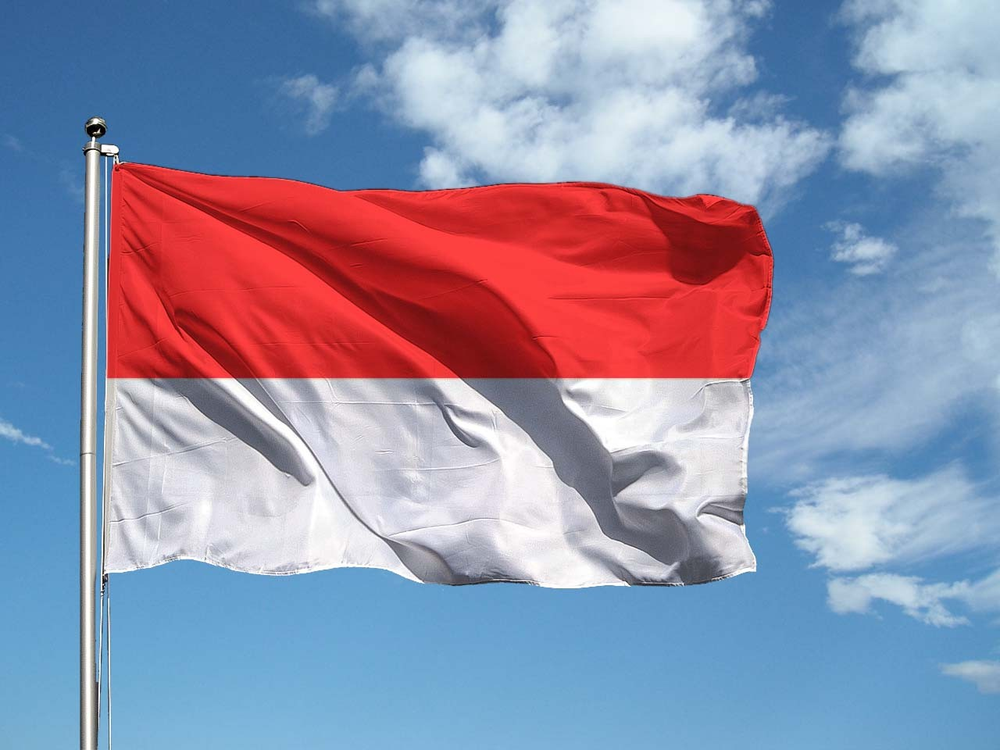
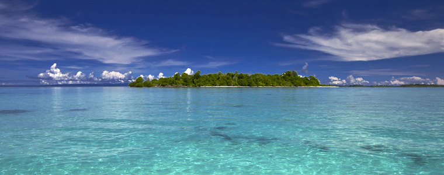

L'Indonesia, o repubblica Indonesiana, è un agglomerato di isole che si trova nel sud-est asiatico, appena sopra l'Australia.
L'Indonesia ha un clima tropicale con due distinte stagioni dei monsoni, una umida e l'altra secca. Le precipitazioni medie annue nelle pianure variano da 1780 a 3175 mm e nelle regioni montuose può arrivare fino ai 6100 mm. L'umidità si mantiene generalmente elevata, in media circa l'80%. Le temperature variano poco durante tutto l'anno: la temperatura media giornaliera a Giacarta, la capitale indonesiana, è tra i 26 e i 30 °C.
La lingua ufficiale è l'indonesiano, anche se la parte della popolazione più anziana e più colta sa parlare fluentemente anche l'olandese, per via di dominazioni avvenute durante il corso della storia.
L'ambiente indonesiano è molto vario, infatti è seconda al mondo, dopo il Brasile per biodicìversità. Infatti, agrazzie alla sua posizione l'Indonesia è caratterizzata da magnifiche coste, che vanno dalle alte scogliere fino alle comode e bellissime spiagge. Inoltre sono presenti molte foreste tropicali in cui la fauna locale trova rifugio dalla civiltà.
